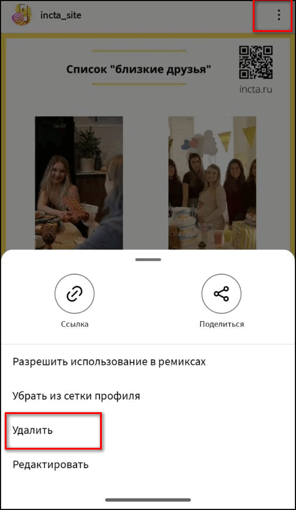
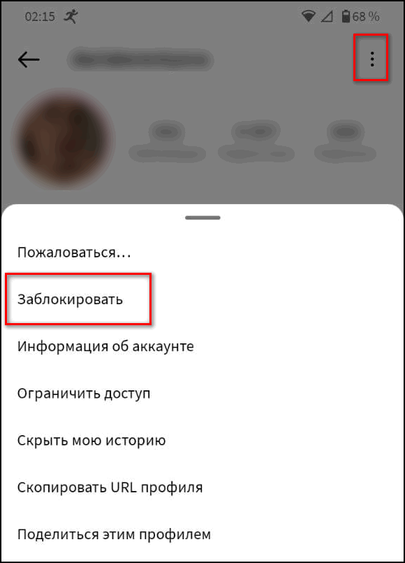
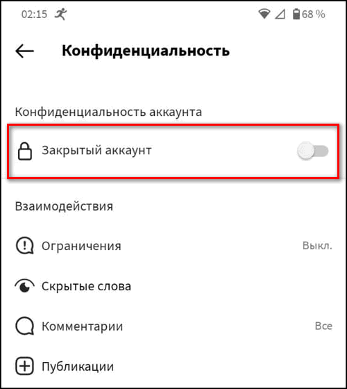
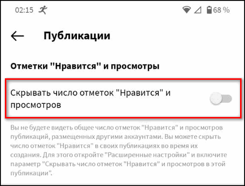
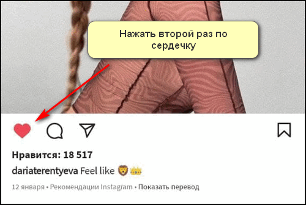
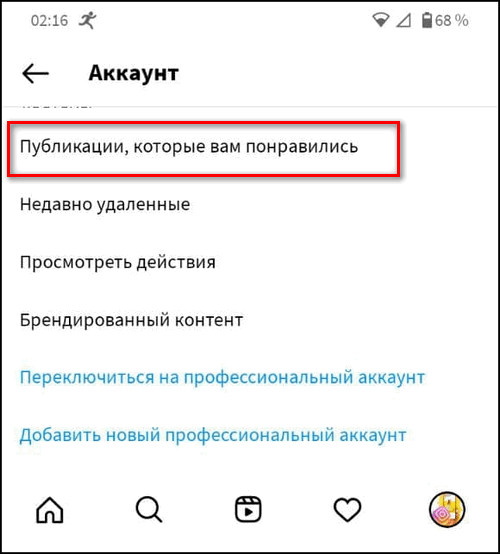

Как убрать чужой лайк на своей публикации в Инстаграме

Удалить чужой лайк в Инстаграме* не получится по той причине, что это действие выполненное другим пользователем и автор не имеет права влиять на активность подписчиков.
Но есть пару вариантов, как скрыть или сделать недоступной отметку «Мне нравится».
Можно ли удалить отметку «Мне нравится» в Инстаграме*
В Инстаграме* можно удалить комментарии под постами, но не повлиять на отметки «Мне нравится». Если владелец профиля опубликовал запись в общедоступном блоге, то любой подписчик может поставить «Мне нравится». Есть два способа, как скрыть:
- заблокировать пользователя, который поставил лайк;
- удалить пост и разместить заново.
Если заблокировать пользователя, то лайки оставленные на публикациях, будут скрыты. Но необходима полная блокировка, которая включает удаление из подписчиков.
Второй вариант – просто удалить пост и добавить заново, предварительно убрав из подписчиков нужного человека:
- Зайти в Инстаграм* – выбрать публикацию, которую нужно удалить.
- Скачать изображения, сделав скриншот – Удалить публикацию.

- Перейти в Галерею – опубликовать снимки в Инстаграме* заново.
Чтобы нужный пользователь не смог снова поставить лайки, нужно перейти к его учетной записи и попросту заблокировать.
Сделать профиль закрытым
Первый вариант, удалить чужой лайк в Инстаграме* – сделать аккаунт закрытым. Но это не значит, что отметки «Мне нравится» будут автоматически удалены. Владельцу профиля нужно предварительно заблокировать выбранного человека, а уже после закрывать аккаунт. Как скрыть лайки определенного пользователя:
- Перейти на страницу к выбранному человеку.
- Сверху три точки – Заблокировать.

- Перейти к свой профиль –Настройки.
- Конфиденциальность – Закрытый профиль.

- Сделать страницу скрытой.
Теперь те, кто не подписан на страницу, не смогут посмотреть записи и поставить лайк. Новые подписавшиеся должны отправить заявку владельцу профиля и дождаться подтверждения.
Кому видны лайки в профиле Инстаграма*
Если профиль общедоступный, то лайки видят все пользователи, которые посещали страницу. Для скрытых – только подписчики страницы. В Инстаграме* есть две формы, как продемонстрировать лайки:
- счетчик. В виде цифр;
- «Понравилось другим». Не показывает количество, но отображает никнеймы.
Если скрыть чужие лайки, то вместо цифр появится: «Понравилось другим» и указаны никнеймы тех, кто поставил отметку «Мне нравится» последним. Нажав по кнопке: «Другие», можно посмотреть ники тех, кто отметил пост. Чтобы скрыть количество лайков на своей странице:
- Зайти в Инстаграм* – Настройки.
- Публикации – Скрыть лайки.

- Подтвердить действие.
Теперь посетители страницы не увидят количество, но смогут перейти к перечню тех, кто отменил пост лайком.
Как убрать свой лайк с публикации
Если владельцу профиля понравилась чья-то запись, он может её отметить значком «Мне нравится». Этот пост будет перенесен в соответствующий раздел: «Публикации, которые вам понравились» в настройках страницы. Как убрать лайк:
- Перейти к публикации, на которую ранее пользователь поставил лайк.
- Нажать по значку в виде «сердечка» повторно.

- Снизу будет убран значок: «Мне нравится».
При повторном нажатии исчезает лайк. Таким образом владелец страницы может быстро убирать отметки «Мне нравится» с постов, которые отметил случайно.
Нажав по значку: «Мне нравится» у автора записи появится уведомление. Если владелец второй страницы желает сохранить пост, но не показываться в разделе «Уведомления» - ему нужно воспользоваться закладками. Это значок в виде «флажка» под каждым постом.
Найти список понравившихся постов
В настройках страницы можно найти перечень публикаций, которые были отмечены пользователем как понравившиеся. Перейти к списку понравившихся постов:
- Зайти в Настройки – Аккаунт.

- Понравившиеся публикации – посмотреть весь перечень.
Если перейти к любому выбранному посту и нажать два раза по изображению – запись пропадет из списка понравившихся. При этом автор публикации не узнает, что его пост больше неинтересен. В перечне понравившихся только те, которые были отмечены «Мне нравится». Недостаток списка в том, что если автор определенного изображения сделать профиль закрытым или удалит изображение – оно также пропадет из раздела.